1 · Inflammation
Instructional Objectives
- Describe the molecular mechanisms of inflammatory processes
- Describe the various types and etiologies of inflammation
- Compare and contrast the mechanism of white blood cells in the inflammatory response
- Describe the vascular changes associated with acute inflammation
- Describe the cellular changes associated with acute inflammation
- Compare and contrast mediators of inflammation and their functions
1.1 · Objective a — Molecular mechanisms of inflammatory processes
Inflammation is the reaction of vascularized living tissue to injury. The word vascularized is doing real work in that definition — tissue without a blood supply cannot mount the response at all. The process is a sequence of events that heals the injury or implant site, either by generating new tissue from native parenchymal cells or by forming fibroblastic scar tissue.
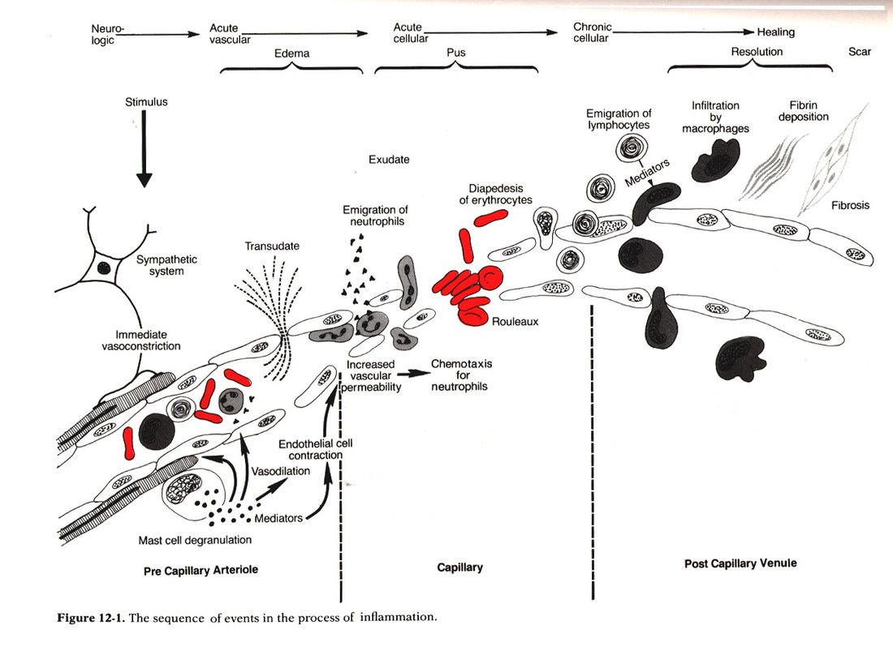
The five main processes, in order:
| # | Process |
|---|---|
| I | Increased blood flow |
| II | Increased permeability |
| III | Migration of neutrophils |
| IV | Chemotaxis |
| V | Leucocyte recruitment & activation |
1.2 · Objective b — Types and etiologies of inflammation
| Acute | Chronic | |
|---|---|---|
| Timescale | Seconds, minutes, hours or days — begins within seconds of injury | Longer — days, weeks, months |
| Histology | Neutrophil-predominant exudate | White blood cells (lymphocytes and macrophages), proliferation of blood vessels, fibrosis, tissue necrosis |
| Nature of damage | May be purely physical, or may involve activation of an immune response (trauma versus a bee sting) | Driven by persistence rather than by the initial insult |
The three causes of chronic inflammation, each with the lecture's own examples:
| Cause | Examples |
|---|---|
| Persistent infection | Bacteria, viruses, fungi, parasites |
| Prolonged exposure to potentially toxic agents | Endogenous — atherosclerosis · Exogenous — particulates such as silica |
| Autoimmunity | Rheumatoid arthritis, lupus |
1.3 · Objective b — Patterns of inflammation
Chronicity and pattern are two independent axes. A process is acute or chronic, and separately shows one of these patterns:
| Pattern | What defines it |
|---|---|
| Serous | Largely plasma, low protein; occurs early or with mild inflammation |
| Fibrinous | Large amounts of fibrinogen forming a thick meshwork; removable only by fibrolytic enzymes — failure of that results in scar tissue formation |
| Suppurative (purulent) | Remnants of white blood cells, protein and tissue debris — that is, pus |
| Hemorrhagic | Damage to blood vessels; occurs alongside other exudates |
| Catarrhal | Mucus hypersecretion accompanying inflammation of a mucous membrane |
| Ulcerative | Necrosis and sloughing of surface epithelium, exposing underlying connective tissue |
| Pseudomembranous | Superficial necrotic layer of fibrin, inflammatory cells and debris forming a membrane-like covering over the affected mucosa |
| Gangrenous | Severe necrosis with or without superimposed bacterial infection — dry is coagulative necrosis, wet is liquefactive necrosis from infection |
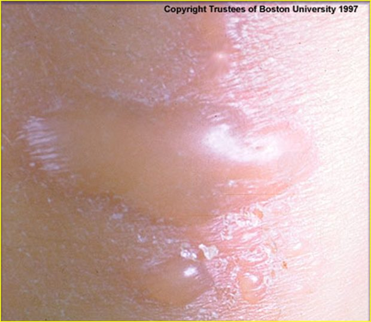
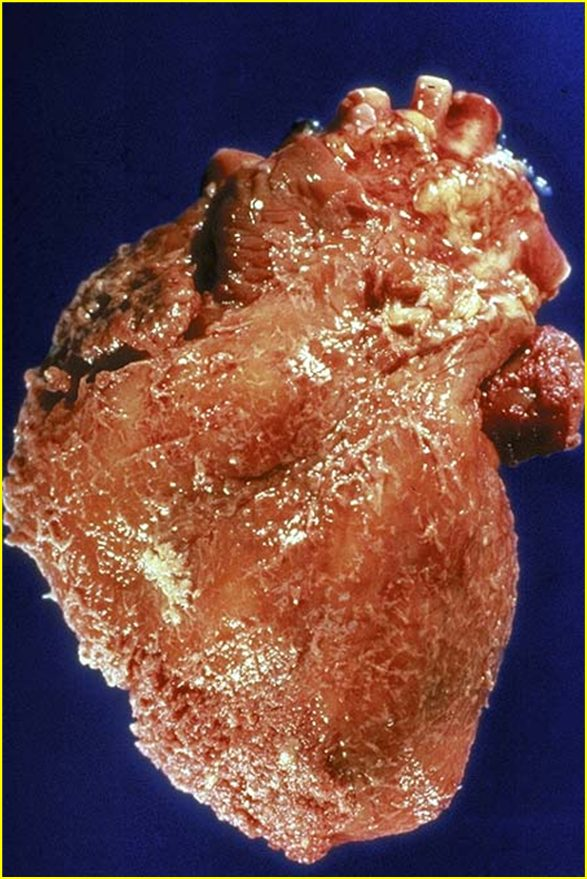
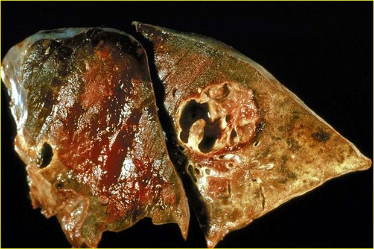
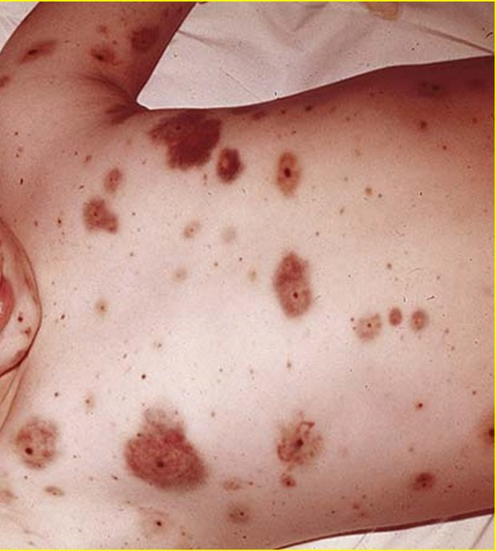
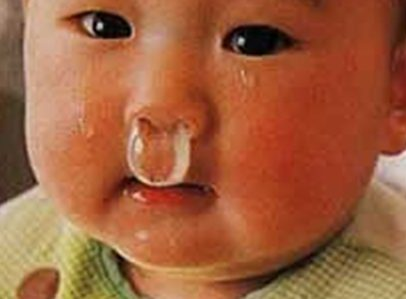
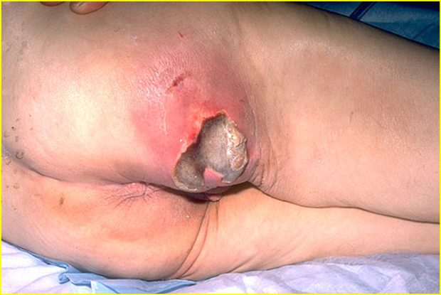
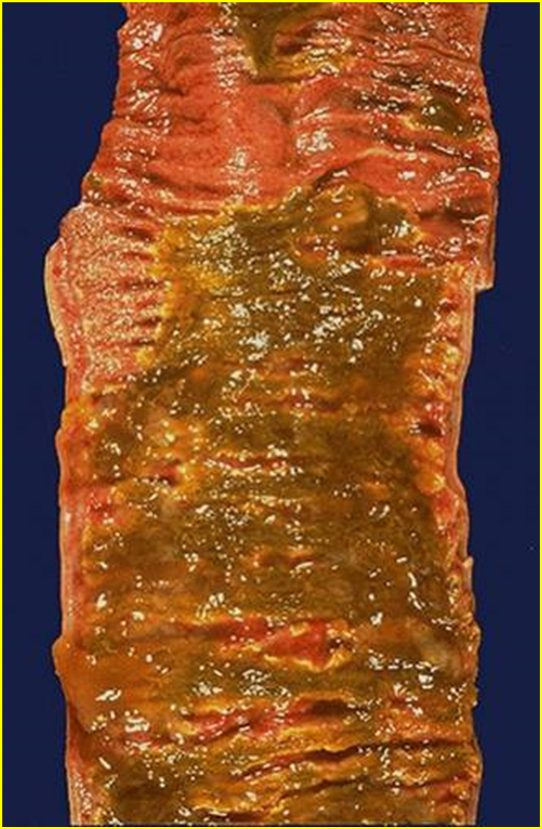
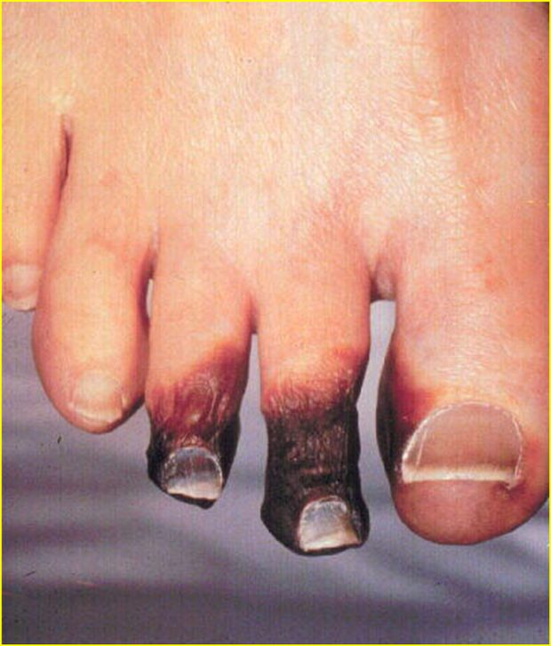
1.4 · Objective c — Mechanism of white blood cells
| Granulocytes (polymorphonuclear, PMN) | Agranulocytes (mononuclear) | |
|---|---|---|
| Defining feature | Differently staining granules in the cytoplasm on light microscopy — membrane-bound enzymes that digest phagocytized particles | Apparent absence of granules — though they do contain non-specific azurophilic granules (lysosomes) |
| Members | Neutrophils, basophils, eosinophils | Lymphocytes (B and T cells), monocytes, macrophages |
Note the terminology trap: PMN refers to all granulocytes, not to neutrophils alone, even though neutrophils are the ones usually meant in conversation.
| Cell | Nucleus & granules | Role |
|---|---|---|
| Neutrophil | Multilobed nucleus that may look like multiple nuclei; cytoplasm appears transparent from fine pale lilac granules | First responder to microbial infection; bacterial and fungal defence; very active phagocyte. Cannot renew its lysosomes, so dies after a few pathogens — their death in large numbers forms pus |
| Basophil | Bi- or tri-lobed nucleus; coarse granules | Allergic and antigen response via histamine |
| Eosinophil | Bi-lobed nucleus; granules a characteristic pink-orange | Parasitic infections; predominant cell in allergic reactions — asthma, hay fever, hives |
| B lymphocyte | Agranulocyte | Humoral immunity: makes antibodies, acts as antigen-presenting cell, becomes memory B cells. Essential to adaptive immunity |
| T lymphocyte | Matures in the Thymus; carries T cell receptors | Cell-mediated immunity (subsets below) |
| Monocyte | Kidney-shaped nucleus; abundant, usually agranulated cytoplasm | Phagocytoses then presents pathogen fragments to T cells; leaves the bloodstream to become a tissue macrophage. Can replace its lysosomal contents |
| T cell subset | Function |
|---|---|
| T helper cells | Activate and regulate T and B cells |
| CD8+ cytotoxic T cells | Virus-infected and tumour cells |
| Regulatory (suppressor) T cells | Return immune function to normal after infection; prevent autoimmunity |
| Natural killer cells | Virus-infected and tumour cells |
1.5 · Objective d — Vascular changes in acute inflammation
The reviewed sequence opens with four vascular events, in this order:
| 1 | Vasoconstriction |
| 2 | Vasodilation |
| 3 | Increased vascular permeability |
| 4 | Haemoconcentration and stasis |
1.6 · Objective e — Cellular changes in acute inflammation
The sequence continues with five cellular events:
| 5 | Leukocyte adhesion |
| 6 | Transmigration |
| 7 | Chemotaxis |
| 8 | Aggregation |
| 9 | Phagocytosis |
Acute inflammation in review: short term (minutes to days), with exudation of fluid, plasma, proteins and leukocytes (neutrophils), then phagocytosis and enzymatic release. Activated neutrophils and macrophages digest foreign material through four steps — recognition, attachment, engulfment, degradation — and recognition and attachment are enhanced when serum factors (opsonins) are present.
Chronic inflammation in review: long term (at least days), characterised by macrophages, monocytes and mononuclear cells including lymphocytes and plasma cells, accompanied by proliferation of blood vessels and connective tissue. Lymphocytes and plasma cells mediate antibody production; macrophages process and deliver antigen to immunocompetent cells.
1.7 · Objective f — Mediators of inflammation and their functions
| Mediator | Function |
|---|---|
| Histamine | First mediator of the initial inflammatory response. Dilates arterioles and increases permeability of capillaries and venules |
| Serotonin | Vasodilation and increased vascular permeability |
| Plasma proteins | |
| Bradykinin | Increases capillary permeability, causes pain, and may increase leukocyte chemotaxis |
| Complement components | 10% of circulating serum proteins; chemotactic to neutrophils and monocytes; the cascade may damage bacteria |
| Coagulation system | Creates a fibrous network at the site to trap exudate, microorganisms and foreign bodies, and stops bleeding so repair can begin |
Opsonins are proteins that adhere to foreign material and make it easier for immune cells to recognise and attach to it.
| Opsonin | What it is | Recognised by |
|---|---|---|
| Immunoglobulin G (IgG) | An antibody | Fc receptors on macrophages and neutrophils, which recognise the Fc portion |
| Complement fragment C3b | Produced when the complement system is activated; binds microorganisms or foreign material | Complement receptors on immune cells |
Source: 1. Inflammation.pptx (Professor Lauren Reynolds), Slides 1–35, and the PAJ 5101 syllabus instructional objectives. Course text: Robbins & Cotran Pathologic Basis of Disease, 10th edition — Chapter 3, “Inflammation and Repair”.
2 · Dermatology: Pathophysiology of the Skin
Stacie Gopal, DMS, PA-C
Instructional Objectives
- Review the anatomy of the integumentary system, including the different strata of the integument
- Compare and contrast pathophysiology of common primary skin lesions
- Compare and contrast pathophysiology of common secondary skin lesions
- Describe the molecular mechanisms of common dermatological conditions
2.1 · Objective a — Anatomy of the integumentary system
Skin is the largest organ in the body, with hair, nails and glands as accessory structures. Its functions are a physical barrier against pathogens, ultraviolet light, fluid loss and trauma; thermoregulation; sensation; and an endocrine role.
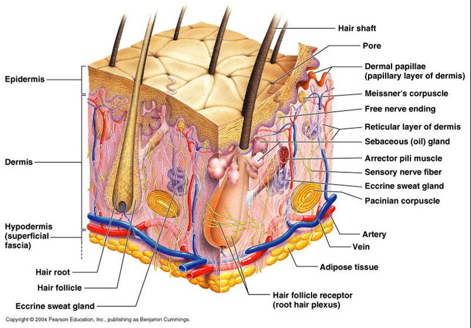
Three layers: epidermis, dermis and subcutaneous (hypodermis). The dermis is where the nerves and vasculature sit.
The epidermis
Stratified squamous epithelium, 0.05 to 1.5 mm, with four cell types — keratinocytes (about 90%), melanocytes, Merkel cells and Langerhans cells. Turnover is every 30 to 60 days and is more rapid in younger patients.
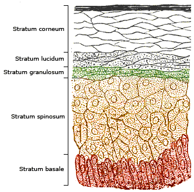
| Stratum | What defines it |
|---|---|
| Basale (deepest) | Single layer of rapidly dividing columnar keratinocytes — the site of cell division. Contains melanocytes and Merkel cells (light touch) |
| Spinosum | 8–10 layers joined by desmosomes, giving the prickle-cell appearance. Contains dendritic and Langerhans cells, the immune sentinels |
| Granulosum | 3–5 layers of diamond-shaped cells containing keratohyalin granules |
| Lucidum | 2–3 layers of flattened dead keratinocytes with clear protein and lipids |
| Corneum (outermost) | 20–30 layers of keratin and dead keratinocytes, packed and cemented into a semi-impermeable barrier |
The dermis and the appendages
Two connective tissue layers: papillary (thin, superficial) and reticular (dense, deeper). Collagen is the primary component, produced by fibroblasts, giving tensile strength; elastic fibres of elastin and fibrillin give recoil. Cells include fibroblasts, macrophages, histiocytes, adipocytes and mast cells, which mediate immunoglobulin E-driven inflammation.
| Appendage | Secretion and function |
|---|---|
| Eccrine sweat glands | Open onto the skin surface; water and electrolytes (sodium, chloride); cooling by evaporation |
| Apocrine sweat glands | Axilla and anogenital areas; protein and fatty lipids; scent glands. Apocrine sweat + bacterial degradation = body odour |
| Sebaceous glands | Sebum — triglycerides, wax esters, squalene — lubricating skin and hair |
Hair comes in three types: terminal (thick, androgen-regulated), lanugo (fine, newborn) and vellus (fine, short, growth independent of androgens).
2.2 · Objective b — Primary skin lesions
A primary lesion is the direct result of the underlying disease and retains its original, unmodified appearance. Read the table by mechanism rather than by name — the size cut-offs are arbitrary, but what is happening in the tissue is not.
| Lesion | Size | What is happening in the tissue |
|---|---|---|
| Macule | ≤ 5 mm | Flat, circumscribed discoloration, NOT palpable. Hyperpigmented from increased melanin in the basal layer; hypopigmented from loss of melanocytes (vitiligo) |
| Patch | > 5 mm | |
| Papule | < 5 mm | Epidermal hyperplasia with hyperkeratosis, plus inflammation and dense collagen in the dermis |
| Nodule | > 5 mm | Dermal-based, dense collagen bundles, extending into subcutaneous tissue |
| Plaque | > 1 cm | Confluence of papules, with marked epidermal thickening and dilated dermal vessels |
| Vesicle | ≤ 5 mm | Fluid with inflammatory cells collecting within or directly beneath the epidermis |
| Bulla | > 5 mm | Separation of epidermis from dermis with fluid accumulation — a deeper plane of cleavage, not just a bigger vesicle |
| Wheal | transient | Mast cells release histamine → vasodilation and vascular permeability → plasma leaks into dermis; histamine also acts on cutaneous nerve endings to cause pruritus |
| Pustule | ≤ 1 cm | Purulent material — leukocytes, debris, serous fluid, possibly organisms. Usually Gram-positive (Staphylococcus aureus, Streptococcus pyogenes); may be sterile, as in rosacea |
| Cyst | — | Encapsulated, in dermis or subcutis. Epidermal inclusion cyst arises from a hair follicle and contains keratin |
| Tumor | > 2 cm | General term for rapid cellular growth, benign or malignant. Dermatofibroma is benign fibrous overgrowth; lipoma is an enclosed capsule of adipocytes |
2.3 · Objective c — Secondary skin lesions
A secondary lesion is a primary lesion modified over time by infection, trauma or other factors, and it may or may not still resemble what it came from.
| Lesion | What is happening in the tissue |
|---|---|
| Scale | Compact portion of desquamating stratum corneum (psoriasis) |
| Crust | Dried sebum, cellular debris, blood or necrotic skin (impetigo) |
| Lichenification | Thickened epidermis from long-term scratching — the itch-scratch cycle. Hyperplasia and hyperkeratosis; thick plaques without scaling (lichen simplex chronicus) |
| Erosion | Focal loss of epidermis that does not penetrate below the dermal-epidermal junction |
| Ulcer | Focal loss of epidermis and dermis, with destruction of collagen and infiltration of inflammatory cells |
| Fissure | Linear ulcer forming a crack, from loss of elasticity, severe dryness and mechanical tension, with hyperkeratosis |
| Atrophy | Thinning: keratinocyte division slows, collagen synthesis slows, elastin degrades |
2.4 · Objective c — Wound healing and scar
| Phase | Days | What happens |
|---|---|---|
| Inflammatory | 1–3 | Fibrin haemostatic plug; neutrophils and macrophages remove dead tissue; growth factors and cytokines signal the next phase to begin |
| Proliferative | 4–21 | Granulation tissue forms — macrophages, fibroblasts and endothelial cells |
| Remodelling | 21 – 1 year | Granulation tissue formation ceases. Type III collagen is replaced with stronger type I, oriented in small parallel bundles — where normal dermis has a basket-weave orientation |
The lecture marks remodelling as the important phase, and the collagen swap is why: the scar ends up strong but architecturally different from the skin around it, which is why it never quite matches.
2.5 · Objective d — Molecular mechanisms of common conditions
| Condition | Mechanism |
|---|---|
| Petechiae / purpura / ecchymoses | Bleeding into the dermis from capillary rupture, infection, thrombocytopenia or vasculitis. Same pathology at three sizes: ≤1–2 mm, 3–10 mm, >10 mm. Non-blanchable. Henoch-Schonlein purpura is an immunoglobulin A vasculitis of skin, joints, kidneys and intestines, commonly aged 3–10 |
| Telangiectasia | Permanent dilatation and thinning of endothelium of superficial dermal vessels, with no inflammatory cell infiltration |
| Urticaria | Mast cell degranulation releasing histamine, forming wheals |
| Allergic contact dermatitis | Delayed hypersensitivity, 48–72 hours. Sensitization: Langerhans cells present haptens to T cells, creating memory. Elicitation: re-exposure promotes T cell migration and cutaneous inflammation (nickel, poison ivy) |
| Irritant contact dermatitis | Direct cutaneous interaction with a chemical, biologic or physical agent — does not require prior exposure |
| Eczema (atopic dermatitis) | T cell-mediated. Overactive immune system plus insufficient filaggrin from a compromised epidermal barrier, with genetic, environmental and psychogenic factors. “The itch that rashes” |
| Neurodermatitis | Cause unknown; nerve hypersensitivity suspected. Itch-scratch cycle producing thick, leathery, scaly plaques |
| Seborrhoeic dermatitis | Cause incompletely understood. Microbiome dysbiosis, altered immune response and barrier dysfunction, in sebaceous-rich regions. Dandruff is the non-inflammatory form |
| Seborrhoeic keratosis | Benign proliferation of immature keratinocytes; possibly activating mutations in fibroblast growth factor receptor-3 |
| Actinic keratosis | Cumulative ultraviolet damage → intraepidermal proliferation of dysplastic keratinocytes. The most common precancer; higher risk for squamous cell carcinoma |
| Psoriasis | Chronic autoimmune inflammatory dermatosis; cells multiply up to 10× faster. Active T cells infiltrate the epidermis and stimulate keratinocyte proliferation with tumour necrosis factor alpha, interferon gamma and interleukin-12. Epidermal hyperplasia, loss of the stratum granulosum, and failure to secrete lipids (xeroderma) |
| Verrucae vulgaris | Human papillomavirus invades epidermal basal cells through microabrasions, driving epidermal proliferation |
| Dermatophyte infection | Trichophyton, Microsporum, Epidermophyton. Spores secrete keratinases and proteases to digest keratin, typically in the stratum corneum — hence the annular patch with central clearing |
Nails
| Finding | Mechanism |
|---|---|
| Leukonychia (Mee’s lines) | Temporary incomplete keratinization at the nail bed; usually harmless, but also heavy metal poisoning |
| Koilonychia | Impaired keratin synthesis, associated with deficiency anaemia; thin, concave, ridged |
| Beau’s lines | Halt of keratin production — transverse grooves. Illness, stress, injury, malnourishment |
| Terry’s nails | Overgrowth of connective tissue in the nail bed. Aging, liver disease, congestive heart failure, diabetes |
| Clubbing | Increased capillary density with increased release of vascular endothelial growth factor. Lung, inflammatory bowel, cardiovascular and liver disease |
2.6 · Objective d — Skin cancers
| Cancer | Mechanism and behaviour |
|---|---|
| Basal cell carcinoma | Most common skin cancer and most common malignancy in humans. Ultraviolet-induced mutation of basal keratinocytes overactivating the Hedgehog signalling pathway. Head and neck; slow growing, rarely metastasises. Pearly papules with telangiectasias |
| Squamous cell carcinoma | Second most common. Ultraviolet DNA damage and mutation in the tp53 tumour suppressor gene; derived from keratinocytes. Keratin pearls and epithelial pearls are pathognomonic. Immunosuppression is a notable risk factor |
| Melanoma | Arises from melanocytes at the dermal-epidermal junction. Ultraviolet light and oxidative stress damage melanocyte DNA. Risk inherited as an autosomal dominant trait with variable penetrance |
Lecture references include Fitzpatrick’s Color Atlas and Synopsis of Clinical Dermatology (9th edition) and several StatPearls chapters; the course text is Banasik, Pathophysiology.